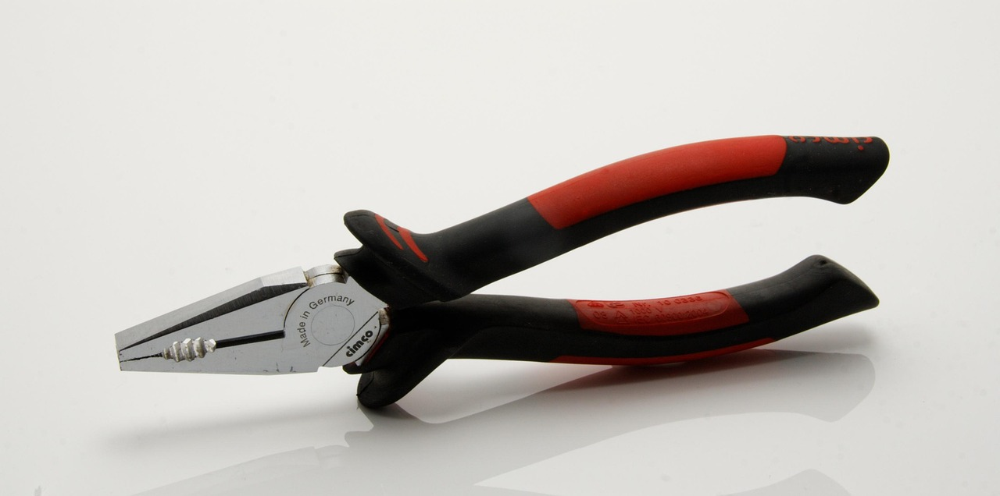
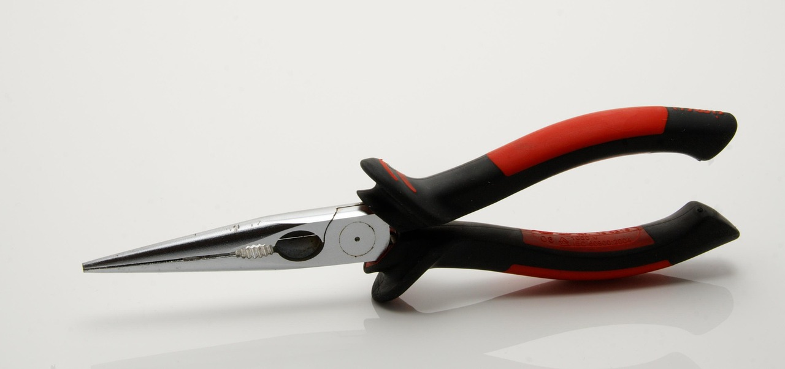
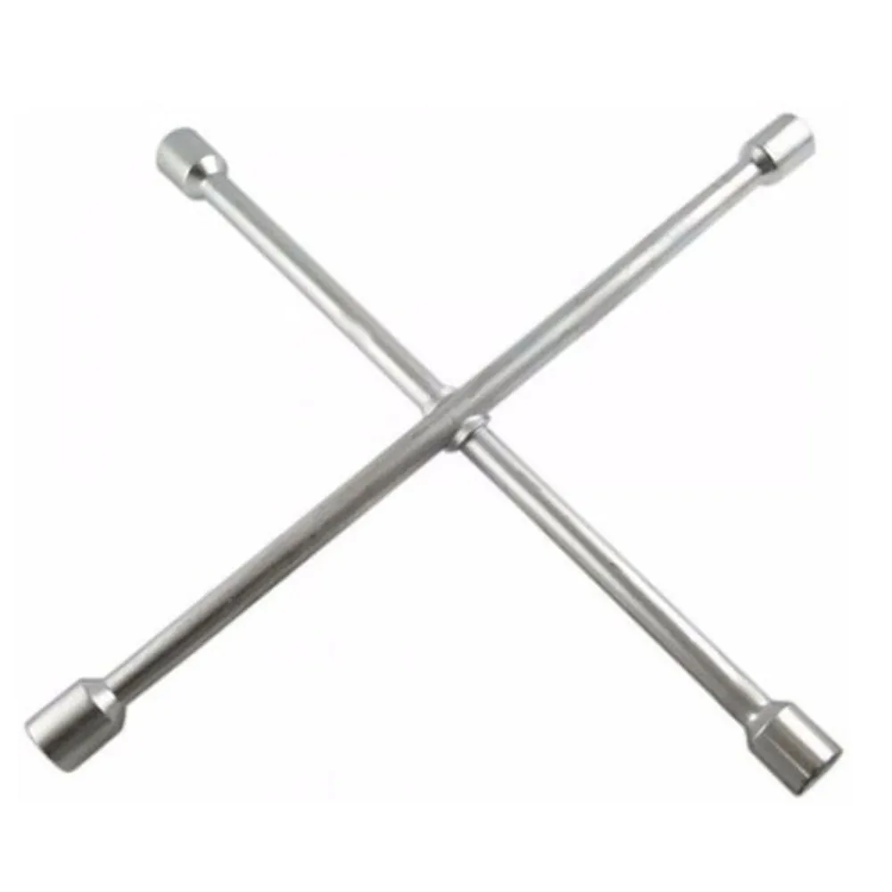
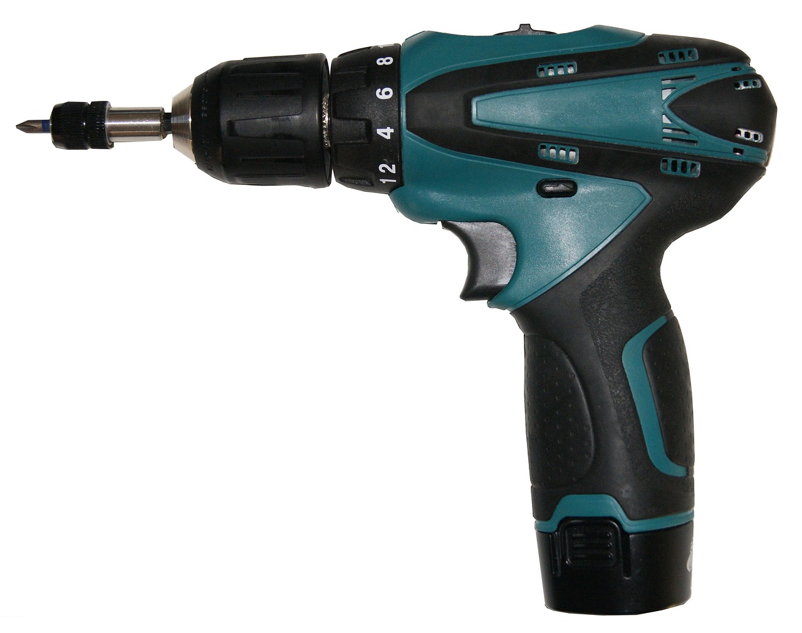

imagem do pixabay
imagem do pixabay
imagem do pixabay
imagem do google Imagens
imagem do pixabay
As ferramentas são essenciais para a realização de diversos trabalhos, desde pequenos reparos domésticos até grandes projetos industriais. Elas podem ser manuais, elétricas ou pneumáticas, cada uma com funções específicas que facilitam o trabalho e garantem precisão. No dia a dia, chaves de fenda, martelos e alicates são indispensáveis para ajustes simples, enquanto serras elétricas e furadeiras agilizam processos mais complexos. O uso correto das ferramentas evita desperdícios de material e aumenta a segurança do usuário. Além disso, a manutenção periódica é fundamental para prolongar sua vida útil. Com o avanço da tecnologia, surgem ferramentas mais modernas e eficientes, que permitem maior automação e precisão nos serviços. Seja para construção, mecânica ou marcenaria, contar com boas ferramentas faz toda a diferença no resultado final.
A escolha da ferramenta correta para cada atividade é essencial para garantir eficiência, segurança e qualidade no serviço. Antes de comprar ou utilizar uma ferramenta, é importante avaliar sua finalidade e os materiais com os quais será utilizada. Ferramentas manuais, como alicates e chaves de fenda, são ideais para ajustes simples e trabalhos de precisão. Já as ferramentas elétricas, como furadeiras e serras, oferecem rapidez e potência para cortes e perfurações. Em setores específicos, como a construção civil e a mecânica automotiva, existem ferramentas especializadas que otimizam o trabalho e garantem melhores resultados. Além da escolha adequada, é fundamental utilizar equipamentos de proteção individual (EPIs) e seguir as recomendações de uso para evitar acidentes. Investir em ferramentas de qualidade e bem cuidadas faz toda a diferença no desempenho das tarefas.
clique para ir pro martelo